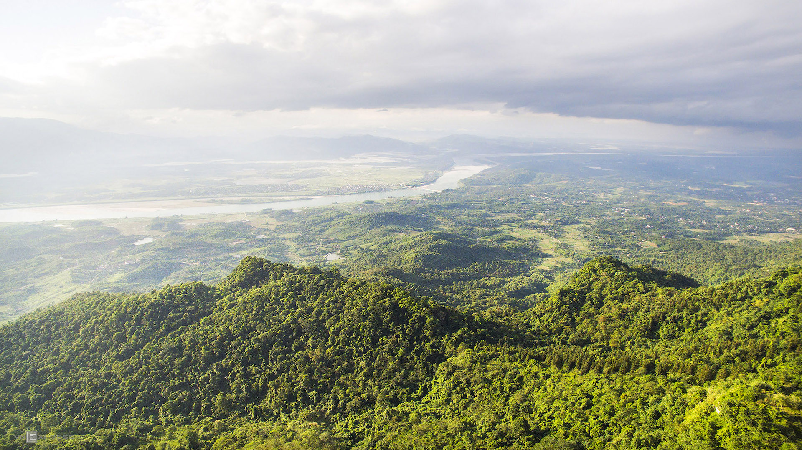
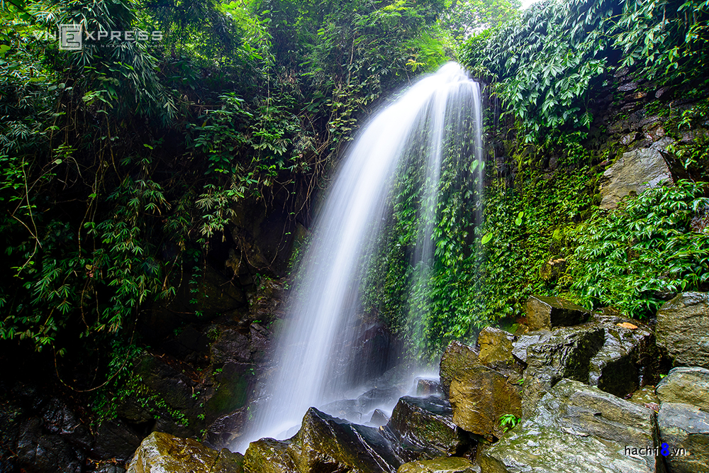

Ba Vì là huyện thuộc vùng bán sơn địa, nằm về phía tây bắc thủ đô Hà Nội. Phía đông giáp thị xã Sơn Tây, phía nam giáp tỉnh Hòa Bình, phía tây giáp tỉnh Phú Thọ và phía Bắc giáp tỉnh Vĩnh Phúc. Ba Vì được thiên nhiên ưu đãi ban tặng sơn thuỷ hữu tình, với hệ sinh thái phong phú. Địa hình đa dạng có cả núi, rừng, thác, suối, sông, hồ cùng các danh lam thắng cảnh nổi tiếng.
Với diện tích gần 11.000 ha, vườn quốc gia Ba Vì được coi là "lá phổi xanh" phía Tây thủ đô Hà Nội. Tại vườn quốc gia có các địa điểm tham quan như nhà thờ cổ bỏ hoang, phủ kín rêu phong mang vẻ huyền bí, hay nhà kính xương rồng.
Cũng như Đà Lạt, Sa Pa hay Tam Đảo, người Pháp xây dựng ở Ba Vì nhiều biệt thự nghỉ dưỡng ở cốt 400, 600 và 1.000. Chỉ khác là chúng đã bị tàn phá theo thăng trầm thời gian cùng thời cuộc. Bởi thế, du khách sẽ ngỡ ngàng trước những nền móng kiến trúc từ hàng trăm năm trước khi đi sâu vào trong rừng. Những khu nghỉ dưỡng, những bếp lò, những bức tường, tất cả đều được bao phủ bởi cây rừng và sương núi.
Ở cốt 600, khu dinh đại tá là một công trình tiêu biểu của kiến trúc Pháp tại Ba Vì, hiện vẫn còn khá nguyên vẹn. Nơi đây có hàng rào dây thép gai, tường đá bao quanh, cao hơn 2 m, dày 0,5 m và một số ụ súng trung đại liên.
Khoang Xanh nằm ở sườn phía đông của núi Ba Vì, trong một khu vực có rừng nguyên sinh, và thuộc quần thể vườn quốc gia Ba Vì. Khoang Xanh có nhiều khoảng rừng nguyên sinh và có trên 2 km suối tự nhiên. Mùa hè, những dòng thác đẹp như thác Mơ, thác Hoa, thác Tràn, thác Mâm Xôi... ngày đêm đổ xuống từ trên núi. Ngoài khu vực suối và rừng tự nhiên, Khoang Xanh còn nhiều khu vực nhân tạo khác như: công viên nước, hồ tắm khoáng, khu vui chơi dành cho cả trẻ em và người lớn, bùn khoáng nóng...
